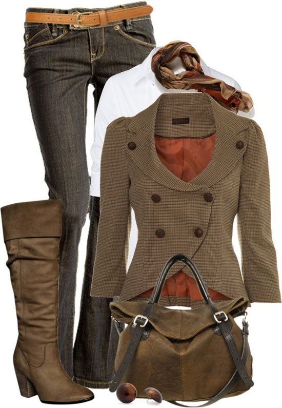

|
Styles for WinterThese layer-friendly fashion essentials are the building blocks of a solid, stylish wardrobe—gotta-have-'em pieces that will get you through even the coldest of cold-weather seasons! Whether it is a big comfy sweater, leggings, and some knee-high boots or a cashmere sweater with a nice pair os skinny jeans, they are both two great everyday looks for the cold weather |
|||||